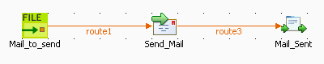
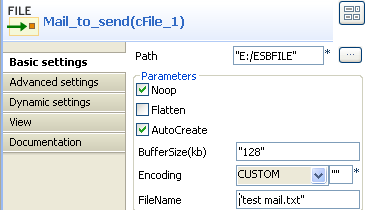
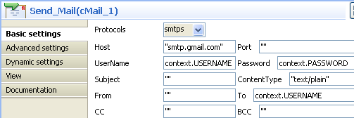
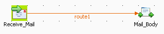

|
Famille de composant |
Messaging | |
|
Fonction |
Le composant cMail est créé pour envoyer ou recevoir des e-mails. | |
|
Objectif |
Envoie ou reçoit des e-mails dans une route. | |
|
Basic settings |
Protocols |
Liste des protocoles d'envoi ou de réception d'e-mails. |
|
|
Host |
Nom de l'hôte du serveur d'e-mail. |
|
|
Port |
Numéro de port du serveur d'e-mail. |
|
|
UserName et Password |
Informations d'authentification, respectivement l'identifiant et le mot de passe. |
|
|
Subject |
Sujet du mail à envoyer. |
|
|
Content Type |
Type de contenu de l'e-mail. |
|
|
From |
Émetteur de l'e-mail. |
|
|
To |
Destinataire(s) de l'e-mail. |
|
|
CC |
Les destinataires en CC de l'e-mail. Vous pouvez saisir différentes adresses e-mail en les séparant par une virgule. |
|
|
BCC |
Les destinataires en CCI de l'e-mail. Vous pouvez saisir différentes adresses e-mail en les séparant par une virgule. |
|
Advanced settings |
Arguments |
Cliquez sur le bouton [+] pour ajouter les lignes nécessaires à la table Arguments. Saisissez le nom et la valeur d'un argument pour chaque ligne ajoutée. |
|
Utilisation |
Lorsqu'il est utilisé comme composant de début, le cMail est conçu pour recevoir des e-mails. Sinon, il est conçu pour en envoyer. | |
|
Limitation |
n/a | |
Ce scénario comprend deux routes. La première envoie un e-mail et la seconde le reçoit.
Construisez la route pour envoyer l'e-mail.
Procédure 3.16. Envoyer un e-mail
Déposez les composants suivants de la Palette dans l'espace de modélisation graphique : un cFile, un cMail et un cProcessor, respectivement nommés Mail_to_send, Send_Mail et Mail_Sent.
Reliez les composants à l'aide de liens Row > Route.
Double-cliquez sur le cFile pour ouvrir sa vue Basic settings.
Cliquez sur le bouton [...] à côté du champ Path afin de sélectionner dans votre système le dossier contenant le fichier à envoyer.
Dans le champ FileName, saisissez le nom du fichier à envoyer, test mail.txt dans cet exemple. Laissez les autres paramètres tels qu'ils sont.
Le contenu de ce fichier est test mail body.
Double-cliquez sur le cMail afin d'ouvrir sa vue Basic settings.
Dans la liste Protocols, sélectionnez smtps.
Dans le champ Host, saisissez le nom de l'hôte du serveur SMTP, smtp.gmail.com dans ce scénario.
Dans les champs UserName et Password, saisissez les informations d'authentification, sous forme de variables de contexte dans cet exemple. Pour plus d'informations concernant la configuration des variables de contexte, consultez le Guide utilisateur de Talend Open Studio for ESB.
Laissez le champ ContentType par défaut, c'est-à-dire text/plain.
Dans le champ To, saisissez l'adresse e-mail du destinataire. Dans ce scénario, saisissez la variable de contexte correspondante.
Double-cliquez sur le cProcessor pour ouvrir sa vue Basic settings.

Dans le champ Code, saisissez le code ci-dessous afin d'afficher une fenêtre pop-up lorsque l'e-mail est envoyé.
System.out.println("Mail sent");Sauvegardez votre route et appuyez sur F6 pour l'exécuter.

Comme affiché ci-dessus, l'e-mail a bien été envoyé.
Construisez la route recevant l'e-mail.
Procédure 3.17. Recevoir un e-mail
Déposez les composants suivants de la Palette dans l'espace de modélisation graphique : un cMail et un cProcessor, respectivement nommés Receive_Mail et Mail_Body.
Reliez les composants à l'aide d'un lien Row > Route.
Double-cliquez sur le cMail afin d'ouvrir sa vue Basic settings.

Dans la liste Protocols, sélectionnez imaps.
Dans le champ Host, saisissez le nom de l'hôte du serveur imap, imap.gmail.com dans cet exemple.
Dans le champ Port, saisissez le numéro du port, 993 dans ce scénario.
Dans les champs UserName et Password, saisissez les informations d'authentification, sous forme de variables de contexte dans cet exemple. Pour plus d'information concernant la configuration des variables de contexte, consultez le Guide utilisateur de Talend Open Studio for ESB.
Laissez le champ ContentType par défaut, c'est-à-dire text/plain.
Double-cliquez sur le cProcessor pour ouvrir sa vue Basic settings.

Dans le champ Code, saisissez le code ci-dessous afin d'afficher le corps du message.
System.out.println(exchange.getIn().getBody(String.class));
Sauvegardez la route et appuyez sur F6 pour l'exécuter.

Comme affiché ci-dessus, l'e-mail a bien été reçu et son contenu est test mail body.